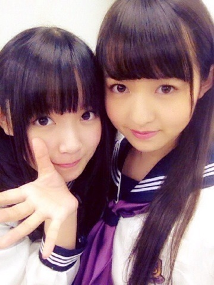
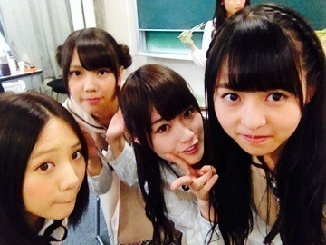
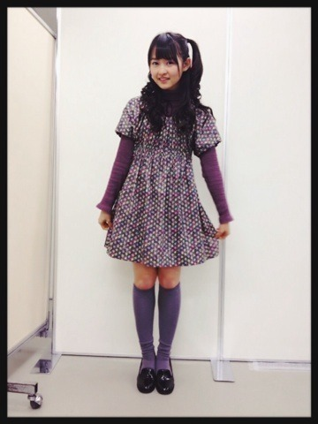
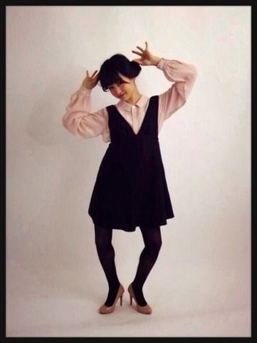

2014/0130Thu葱グラデーション。 541回目
やっとまいまいと遊んだ！
昔からずっと遊ぼうって言ってて
いつ遊ぶか決めてない間に
もうこんなに時が流れたよ笑
のんびりぶらぶらして
行きたかったカフェにも行って
まったりご飯食べて話して
楽しかったー
まいまいのよくやる口のまね
今度は雑貨屋さん巡るんだー♪
NOGIBINGO!2の妄想企画。
感想ありがとう！

私とひめかが放課後愛の告白をし、
取り合うというもう
少女漫画のど真ん中の世界観のような
妄想を披露したのですよ。
普段はツンツンしてるけど
本当はあなたのことがだいすき
素直になれない女の子
という解釈を
瞬時にできたのは私が昔から
少女漫画を熟読しているからだ！
ふははははは！
妄想は無限大だーーーー
妄想って楽しいなあああああ
コメント少しずつ読んでます！
ありがとうございます。
アンダーに対しての概念
ぶっ壊してやる
勢いで頑張ります。
まりか
2014/0127Mon心に鉛筆の芯。541回目
8thシングル選抜発表。
私は今回アンダーです。
7thでは表題曲のMVで
チャンスをいただいたことが
私にとっていちばん大きかった。
6thで活動していたときよりも
自信がついて前向きに
活動することができました。
思い返せば後悔したこと
たくさんあるけど
常に前向きでいました。
7thでいただいたチャンスを
落ちたからといって
そこで止めるわけにはいかない。
満足なんてしてない。
乃木坂46が大きくなるために
できることを精一杯やる。
私にしかできないことがあるはず。
今、本当に楽しいです。
この活動がすきです。
こういう気持ちを大切にしたい。
何がきても準備万端でいなきゃ。
応援しがいがある
と思ってもらえたらいいな。
変わらず応援よろしくお願いします！
伊藤万理華
2014/0124Fri順番に食べよう。540 回目

いつぞやか撮った写真。
昨日は久しぶりに高円寺ぶらりした！
実はそんなに行ったことなくて
迷子になりながらなんとなくルートを
頭の中で考えながらぶらりしてました。
ほーお
この道はここに繋がってるわけね
じゃあこういったら
いい感じのルートになるわけね
なるほどねうん
てな感じで。
スカートだけ購入。
でも見るだけで楽しい。
どこ歩いてもかわいいお店がある。
目的なく行くといいの見つかるんだー
春服まだかなー
ほしいなー
まいまいがエンドレススンについて
説明してくれましたね。
これやってると楽しくなるから
友達と話してる時に
突然やってみるといいかも笑
......
いくちゃんれなりんまいちゅん
お誕生日おめでとう！
3人一緒の誕生日ってすごいなあ
真面目なところが似てるのかな。
......
玲香のブログに
私が加工したの載せられた。
加工したというか教えながら
こうやるんだよって適当に
指でシュッてやったものだけど←
お返しに加工してくれた！
↓
私の想像を遥かに越えてて笑
苔をイメージしたらしい
結構気に入ってしまったんだが
重要なちょんまげ隠された
まりか
2014/0120Mon滲んで消えない。539 回目
昨日は幕張メッセで個握でした！
初の4部で嬉しかったです。
髪型は巻いて
1部 耳の下ツイン
2部 三つ編みみたいなツイン
3部 耳の上ツイン
4部 ハーフツイン
ツインしかしてない笑
ピンクのキラキラのメイク
1部2部は珍しくタイトなシルエット
On y vuaのタートルネック
mysticのスカート、靴
シンプルな感じ

3.4部ではおいシャン握手会でも着た
母が作ったワンピ着まわしたよー
このワンピースを覚えてる方が
何人かいてびっくりした！！
すごいすごい
そんでハーフツインだよー
見てーハーフツインだよー
たまにはこういう髪型や格好に
挑戦するのも楽しい。
サンドアートに感動したと
たくさんの方に
嬉しいことばをいただきました。
NOGIBINGO!2の早泣きについて
EX大衆やLARMEの感想も
ありがとう！！

オフショット
まりか
2014/0117Fri脳内サーカス。538回目
＼こんばんは／
今日は生写真の撮影だた！！
毎回衣装がカラフルで楽しいなー
でも靴は全部ヒール高いから
たいへんだぜー
脚がガクガク言ってるよー
でも楽しいよー
撮影すきだよー
EX大衆チェックしましたか？
なんと私の今までの
個人PVの特集をしてもらいました。
感激です。ありがたいです。
今までのを知らない方は
ぜひ読んでみてください。
乃木坂46のMV、個人PVの
魅力がたっぷり載っています！
素敵に特集してくださって
本当にありがとうございました。
明日はLARME発売です！
お楽しみに！
ぐちゃぐちゃ
脳の中身が
脳みそが
血がさらさら
アンテナを張ろう
電波状況確認
ぶーぶー
光を蓄えよう
そして吸い込もう
しゅー
吸い込みました
まりか